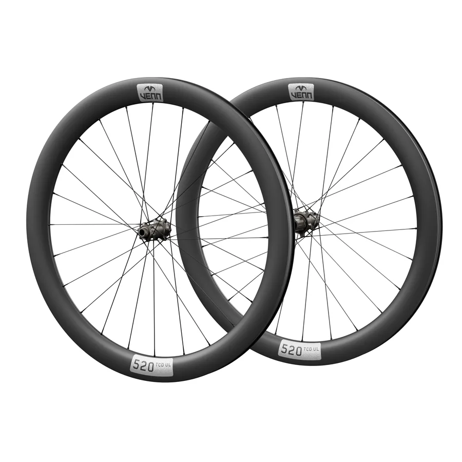
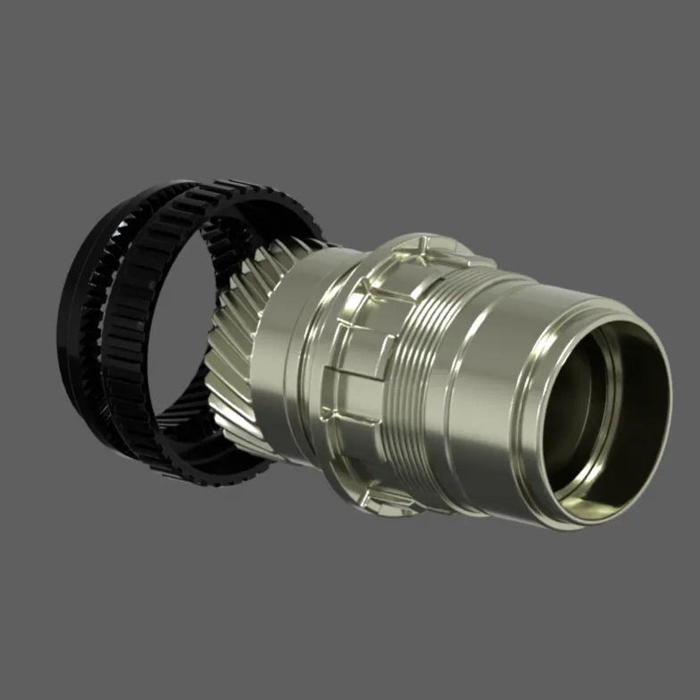
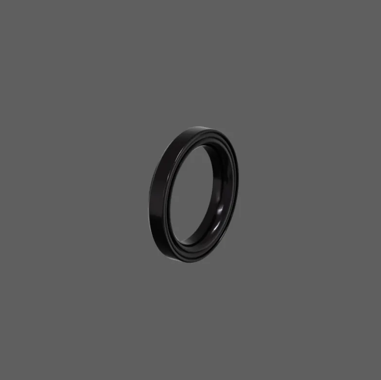
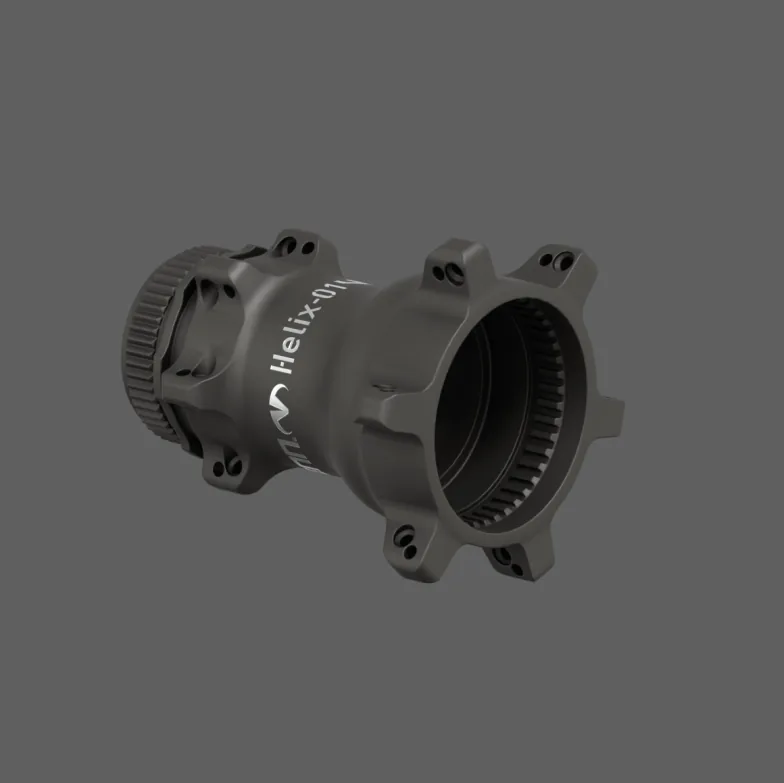
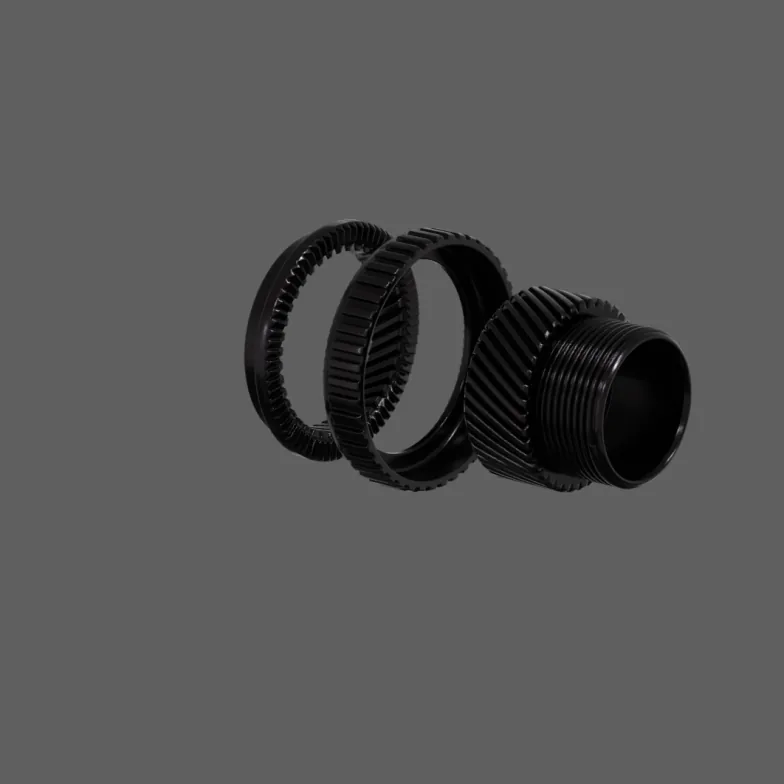
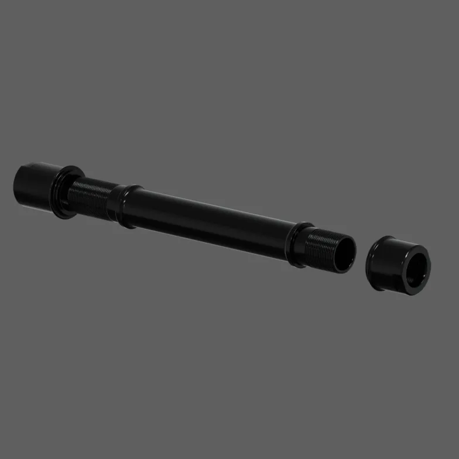
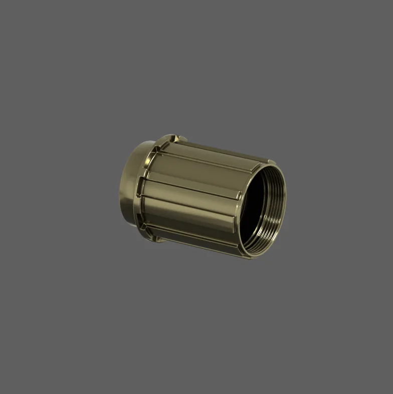
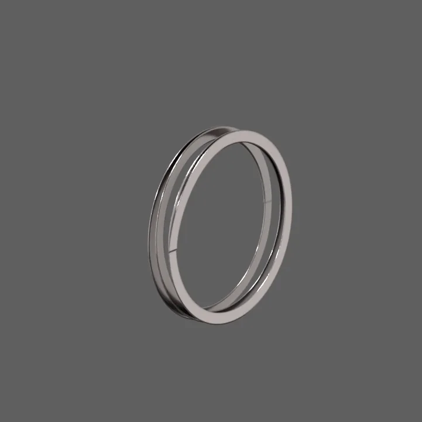
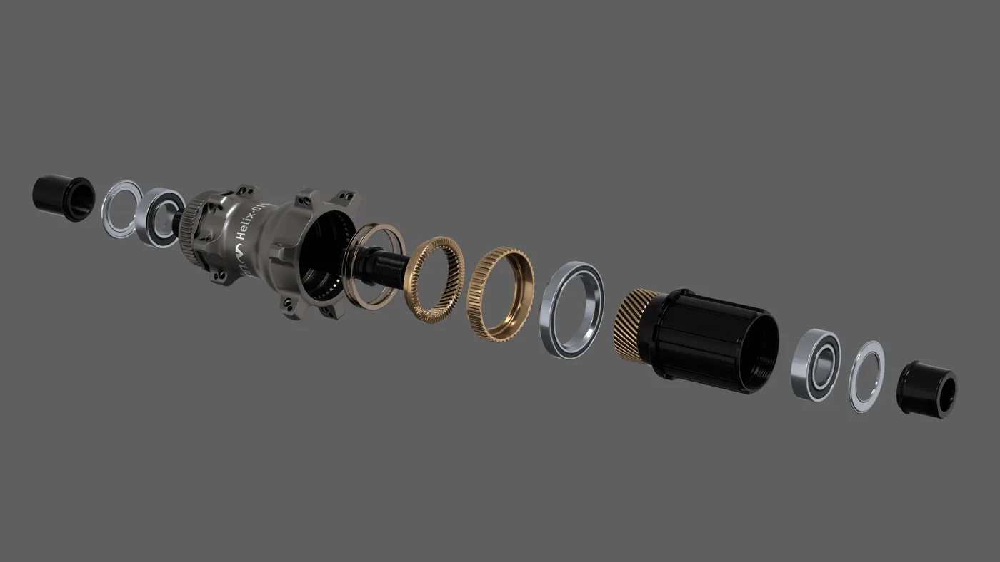
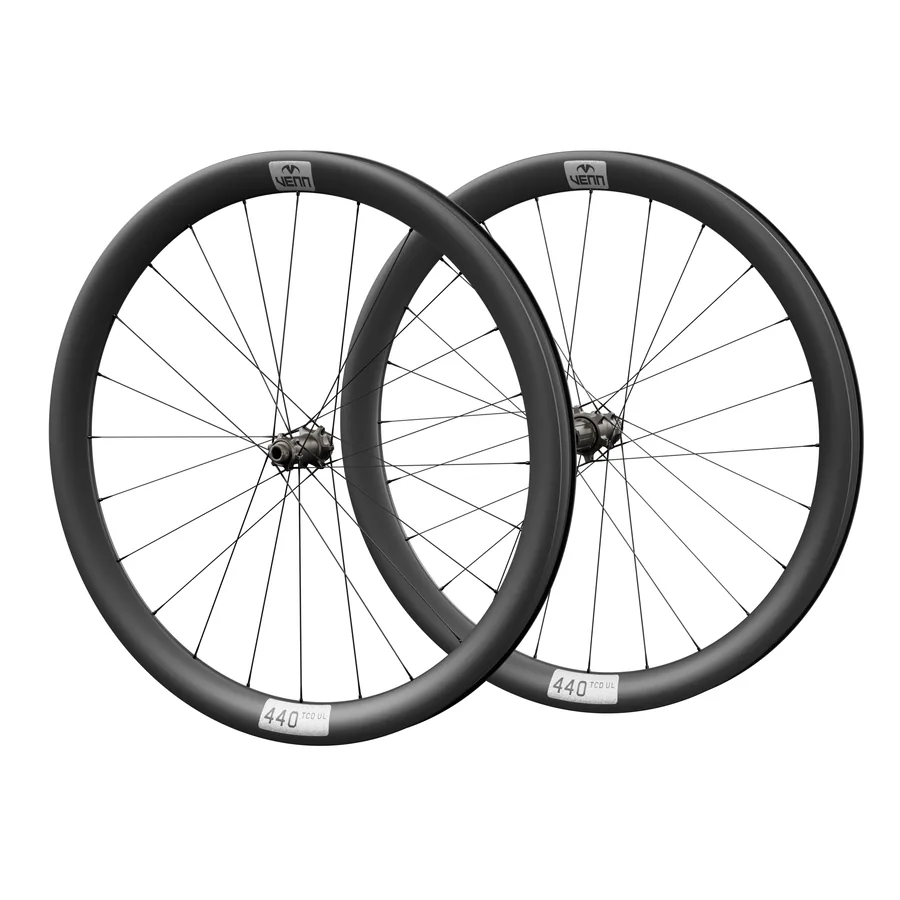

Venn Helix-01 hub set
The hub that tightens under power.
A 72-tooth helical ratchet that your pedalling pulls into engagement, a 41.5 mm angular contact bearing that keeps rolling under load, and a cold-forged shell. 348 g for the pair.
72THelical ratchet, engages within 5°
41.5 mmNano-coated angular contact bearing
348 gThe set: front 105 g, rear 243 g
2 yearsWarranty on materials and workmanship
Helical engagement
The harder you pedal, the tighter it meshes.
In an ordinary ratchet hub, springs push the drive rings together and a little play stays between the teeth. Every time you start to pedal, that play is taken up before the wheel is driven.
In the Helix-01 the drive torque itself pulls the two 72-tooth ratchet rings together along a helical spline, the way a helical gearbox loads its gears. The spring only starts the engagement; your pedalling finishes it. Under power there is no free play, out of the saddle, in a sprint or on a steep climb.
- Teeth72, engagement within 5°
- Ratchet steelSCM 415, hot forged, CNC machined, manganese phosphate coated
- SpringFlat steel, more contact area than a round wire spring

Rolling under load
Spins freely on the road, not just in your hand.
A hub that spins beautifully in a workstand can still drag with a rider on it. Ordinary radial bearings are built for loads straight through their centre; a wheel under a rider, a sprint or a hard corner loads them from the side as well.
Beside its two 6902 bearings, the Helix-01 rear hub runs an oversize 41.5 mm nano-coated angular contact bearing. It is made for combined side and radial loads, so it keeps its alignment under the weight of a rider and the force of a sprint, and the wheel keeps rolling freely when it matters.
- Rear2 x 6902 and 1 x ACB41H6.5 angular contact
- Front6902 and 6802
- PreloadSet once, by hand, with the non-drive side collar

Built like a gearbox
Forged where it can be, machined where it must be.
The Helix-01 is made in Taiwan by a hub maker with four decades of precision hub manufacturing, drawing on the island's automotive forging and surface treatment supply chains instead of reinventing them.

Cold-forged shell
Cold forging aligns the aluminium's grain with the shape of the part, for strength that machining alone cannot give. Shot-peened grey, laser-etched logo.

Gearbox-grade ratchet
Custom-forged SCM 415 steel, CNC machined and manganese phosphate coated: the treatment car gearboxes use to cut friction and hold lubricant.

15 mm threaded axle
7075-T6 hardened aluminium. A steel axle is available for e-bikes and tandems.

Hardened freehub
Shimano HG or SRAM XDR, and Shimano Micro Spline for MTB. A steel freehub is available for e-bikes and tandems.

Flat steel spring
More contact area and strength than a round wire spring, so engagement starts evenly every time.

Simple to service
Disassembly is straightforward, and the sealed ratchet needs little care. Lithium-based grease is all it asks for.
Weight
348 grams, carried where they cost least.
The Helix-01 is not built to be a weight-weenie hub: its grams go into the gears, the oversize bearing and the forged shell. It is still lighter than many high-engagement hub sets.
And hub weight sits 2 to 3 cm from the axle, where it adds almost nothing to the wheel's rotating inertia: when you accelerate, a gram at the hub costs about half of a gram at the rim. Built into our 520 Helix road wheelset, the whole set weighs 1,310 g.
24-hole hubs, 12 x 100 / 12 x 142 mm, alloy axle.
Specifications
Venn Helix-01 hub set
| Engagement | 72-tooth helical gear ratchet, 5° |
|---|---|
| Brake | Disc, Center Lock |
| Hole counts | 24h front and rear, 28h front and rear, 28h Boost front and rear |
| Axles | 12 x 100 mm front, 12 x 142 mm rear; Boost 15 x 110 mm front, 12 x 148 mm rear |
| Freehubs | Shimano HG, SRAM XDR, Shimano Micro Spline (MTB); steel freehub on request |
| Weight | Front 105 g, rear 243 g |
| Bearings | Rear: 2 x 6902, 1 x ACB41H6.5 angular contact; front: 6902, 6802 |
| Shell | Cold-forged aluminium, shot-peened grey, laser-etched logo |
| Axle | 15 mm, 7075-T6 aluminium; steel on request |
| Ratchet | SCM 415 steel, forged, CNC machined, manganese phosphate coated |
| Made in | Taiwan |
| Warranty | 2 years |
Helix wheelsets
Or ride it already built.
Two Venn wheelsets are built on the Helix-01: 1k filament wound carbon rims, Sapim CX-Ray spokes, and no clear coat, in gloss, matte or 25k filament wound.

Price
One price for the hub set.
Venn Helix-01 hub set
$449
About €399. Front and rear hub.
- Front and rear hub, 24h, 12 x 100 / 12 x 142 mm thru axle
- Freehub of your choice: Shimano HG or SRAM XDR
- Assembled, ready to lace
- 2-year warranty
Wheel builders and shops
From 10 sets: trade prices, plus the 28h and Boost versions, steel axles and freehubs, and Micro Spline. Tell us what you build and we will quote.
- Minimum order 10 sets
- 24h, 28h and 28h Boost
- Shimano HG, SRAM XDR, Shimano Micro Spline
Questions
Frequently asked
What does helical engagement do?
In an ordinary ratchet hub, springs alone hold the drive rings together and a little play remains between the teeth. In the Helix-01 the drive torque pulls the two 72-tooth ratchet rings together along a helical spline, so the harder you pedal, the more firmly they engage. Under power there is no free play.
Why an angular contact bearing?
A wheel under a rider is loaded from the side as well as from above. Radial bearings drag under that combined load; an angular contact bearing is made for it. The oversize 41.5 mm bearing keeps the rear hub rolling freely on the road, not only in a workstand.
How is the bearing preload adjusted?
Angular contact bearings need a light preload: no free play, but not so tight that the bearing rolls poorly. Tighten the non-drive side preload collar by hand until the wheel has no side-to-side play, then tighten its bolt. The bearing settles into its working state and needs no further adjustment in normal use.
Which bikes does it fit?
Disc brake bikes with thru axles: 12 x 100 mm front and 12 x 142 mm rear for road and gravel, Boost 15 x 110 mm and 12 x 148 mm for MTB (28 hole). Freehubs for Shimano HG and SRAM XDR, and Shimano Micro Spline for MTB. There is no rim brake or Campagnolo version.
How do I service it?
Disassembly is straightforward. The ratchet is sealed from the elements and its steel is manganese phosphate coated against corrosion, so it needs little care. Use lithium-based grease when you service it.
Why does it cost less than the best-known premium hubs?
The Helix-01 is built on supply chains that already exist in Taiwan: forged gears from automotive suppliers, coatings from semiconductor manufacturing, and a hub maker that has been making hubs since 1982. We did not have to invent any of it, and there is no retail chain to pay for.
What is the warranty?
Two years against defects in materials and workmanship.